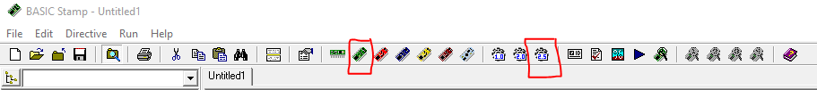

Getting Started¶
Before we get started here are a couple of things you should consider downloading:
(For Windows)
- Parralax USB Driver - USB Driver to recognize the conncetion between your computer and parralax robot
- BASIC Stamp Editor - A basic IDE to run your PBasic files on your robot.
We’ll be starting off with the easy concepts first as they are part of the core to build upon later on. First on the list is Variables!
Prepping your Basic Stamp Editor¶
Before you attempt to run any files make sure to click the top 2 buttons to create type headers at the top of your file. These type headers are required in order to for the Stamp Editor to know which version of PBasic to compile and run on your robot(s).
For this guide you will be using the Green button and PBasic 2.5
